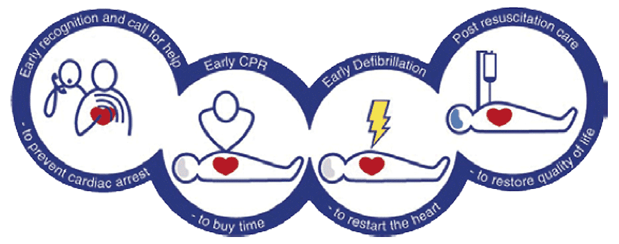
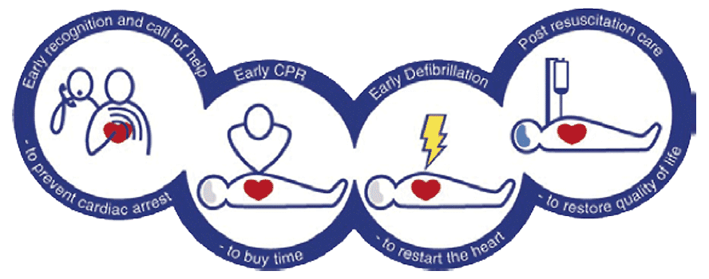
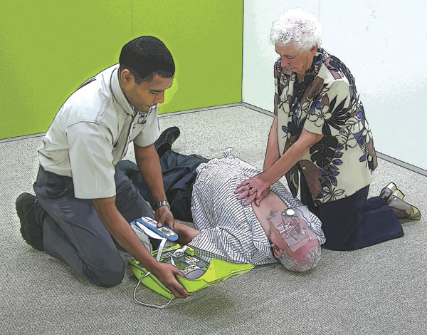

Chain of Survival
The actions linking sudden cardiac arrest with survival is called the Chain of Survival. Cardiopulmonary resuscitation plus defibrillation within 3–5 minutes of collapse can produce survival rates as high as 75%.
The four links in the Chain of Survival are:
1st Link – Early Recognition and Call for Help
The first link shows the importance of the early recognition of those at risk of cardiac arrest and then calling for help immediately in the hope that early treatment can prevent cardiac arrest.
2nd Link – Early CPR
Early Cardiopulmonary Resuscitation (CPR) performed by a first aider on a casualty who is in cardiac arrest can buy life-saving time.
3rd Link – Early Defibrillation
Early defibrillation is the third and perhaps most significant link. Automated External Defibrillation is the emergency procedure where specially trained first aiders apply an electronic device to the chest of a cardiac arrest casualty, and the device automatically delivers a controlled electric shock to the casualty's heart.
4th Link – Post Resuscitation Care
The final link in the Chain of Survival, effective post-resuscitation care, is targeted at preserving function, particularly of the brain and heart. This is performed by ambulance paramedics and other highly trained medical personnel.